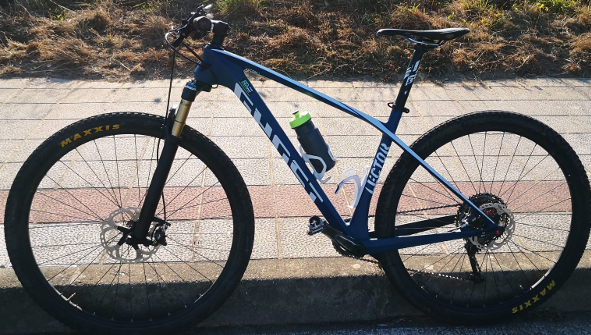
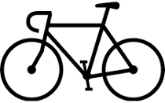

Bicicleta montaña
|

La bicicleta de montaña es el tipo de bicicleta más común que se puede encontrar en la calle. Suele ser con la que la mayoría de la gente aprende a andar en bicicleta por tener ruedas más anchas y ser más compatible con los ruedines, además de ser más barata y ajustarse a la mayoría de terrenos. Se pueden encontrar desde 150 a 200 euros las más baratas y llegar a superar los 15000 en el caso de las más premium o de edición limitada
Ventajas
- Es más barata
- Es más flexible con respecto a los terrenos por los que puede ir
- Más facil de aprender a usarla
Desventajas
- El mantenimiento es más caro
- En carretera el esfuerzo es mayor
- El impacto sobre las articulaciones es mayor

Volver a la página principal

Más información sobre la bicicleta de carretera